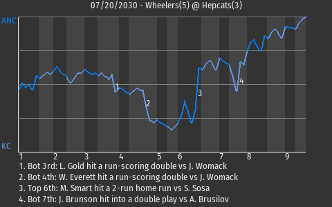

| MINOR LEAGUE PBE ANCHORAGE WHEELERS AT KANSAS CITY HEPCATS 07/20/2030 |  | |
| |
|
 | | MINOR LEAGUE PBE | | ANCHORAGE WHEELERS AT KANSAS CITY HEPCATS | | GAME ID: 569 - SATURDAY, JULY 20TH, 2030 - GAME LOG | | | 1 | 2 | 3 | 4 | 5 | 6 | 7 | 8 | 9 | R | H | E |
|---|
| Anchorage Wheelers (23-25) | 1 | 0 | 0 | 0 | 0 | 3 | 0 | 1 | 0 | 5 | 7 | 0 | | Kansas City Hepcats (22-26) | 0 | 0 | 1 | 2 | 0 | 0 | 0 | 0 | 0 | 3 | 10 | 0 |
|
|  |
|
| Wheelers Get Road Win, 5-3 | The Anchorage Wheelers defeated the Kansas City Hepcats, 5-3, at Charlie Parker Memorial Stadium today. Leading the charge for Anchorage was first baseman Mac Smart. He went 2-4 with a home run. He drove in 2 runs and scored once. Earning his 7th save for Anchorage was Po Tato. Anchorage is now 23-25.
A crucial at-bat came with a runner on 1st and no one out in the top of the sixth inning. That's when right fielder Slammin' Sammy Michaels, who is tied for 10th in the MiLPBE in doubles with 7, hit a single. The Wheelers went on to win.
Michaels called the win the result of "everyone being in sync."
|
| |  |
|
|
| ANCHORAGE BATTING LINESCORE | | KANSAS CITY BATTING LINESCORE |
|---|
|
BATTING
Doubles: L. Anderson (6, 8th Inning off C. Cumber, 0 on, 0 outs)
Home Runs: M. Smart (3, 6th Inning off S. Sosa, 1 on, 2 outs)
Total Bases: T. Turtle , S. Michaels 2 , L. Anderson 2 , B. Simmons , M. Smart 5
2-out RBI: T. Turtle , M. Smart
Runners left in scoring position, 2 outs: M. Smart
Team LOB: 2
BASERUNNING
SB: B. Simmons (19)
FIELDING
Double Plays: 2 (Womack-Anderson-Smart, Smart-Bauer II-Smart) |
| | BATTING
Doubles: W. Everett (7, 4th Inning off J. Womack, 1 on, 2 outs) L. Gold (6, 3rd Inning off J. Womack, 1 on, 2 outs)
Total Bases: C. Drudge 3 , B. Frost , W. Everett 2 , D. Evans , L. Bolt , L. Gold 4
2-out RBI: C. Drudge , W. Everett , L. Gold
Runners left in scoring position, 2 outs: , R. Menard 2 , T. Griffey , L. Bolt , J. Brunson
GIDP: D. Evans , J. Brunson
Team LOB: 11
BASERUNNING
SB: L. Bolt (9) |
|
|
|
| ANCHORAGE PITCHING LINESCORE | | KANSAS CITY PITCHING LINESCORE |
|---|
|
PITCHING
Game Score: J. Womack 44
Batters Faced: J. Womack 24, T. Kane III 6, A. Brusilov 7, J. Smith 1, P. Tato 3
Ground Outs - Fly Outs: J. Womack 6-5, T. Kane III 2-0, A. Brusilov 3-0, J. Smith 1-0, P. Tato 1-1
Pitches - Strikes: J. Womack 80-53, T. Kane III 26-12, A. Brusilov 26-11, J. Smith 8-5, P. Tato 14-8
Inherited Runners - Scored: A. Brusilov 2-0 , J. Smith 2-0
|
| | | Player | IP | H | R | ER | BB | K | HR | PI | PS | ERA |
|---|
| S. Sosa L (3-7) | 6.0 | 6 | 4 | 4 | 1 | 2 | 1 | 91 | 60 | 4.91 | | C. Cumber | 3.0 | 1 | 1 | 1 | 1 | 2 | 0 | 37 | 22 | 3.47 |
|
|
|
| GAME NOTES |
Player of the Game: Mac Smart
Ballpark: Charlie Parker Memorial Stadium
Weather: Partly Cloudy (59 degrees), wind blowing in from center at 10 mph
Start Time: 7:05 PM EST
Time: 3:19
Attendance: 6231 |
 |